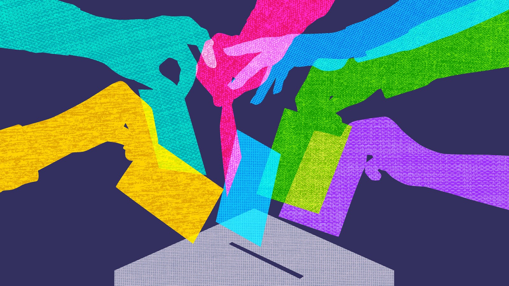
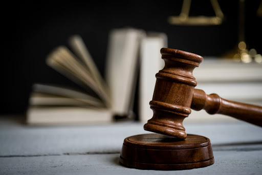

Though in technical terms it is a relatively new system of governance, democracy has established itself as the most preferable and beneficial governing system in today’s generation. A concept first developed under the name “demos” (“common people”), “kratos” (“strength”), given by the Greeks in the 6th century B.C., the democracy of that time did not by any means have as much latitude as today. Though some countries tend to place themselves under the guise of “democracy” for a more favorable outlook, corruption is still rampant in their various levels of government. Today, a true democracy is one of the most coveted aspects of a world citizen, allowing the people, by their own free will, to collectively come together and vote on equal terms.
No one vote is held in higher regard than another and the people have all rights and means to vote for a change based on their satisfaction or dissatisfaction with a contemporary government. In some logic, the people are the ones making decisions for themselves, rather than a higher-ranking individual. This very same individual in democratic terms is solely meant to be placed forward as the spokesperson to act upon the desires of the majority. This is meant to ensure that power is not taken beyond its limits and in the case that it does, the situation may be quickly resolved.
The most democratic nation in the world, as cited by the Economist, is Norway. There is no reason to doubt that this Scandinavian country has also taken the title of the World’s Happiest Country on the World Happiness Index in recent years. Though still a constitutional monarchy, the Norwegian throne can be said to be a mere symbol and kept tradition, as all power lies in the hands of the people and their elected representatives. The nations of Canada, Scandinavia, Western Europe, and the somewhat flawed, yet potent United States top the charts when compared to other nations on a democratic scale.
The factors (per the Economist) which determine these standings include: the functioning of government, electoral process, voter participation (which lands a blow to Canada’s standing), civil liberties, and political culture. North Korea and Syria are effectively the worst countries to date in democratic values, both of which are ruled byㅡand in modern times, have been ruled byㅡautocratic regimes that require citizens to appease their leaders and remain entirely subjugated. Such countries face various crises, as their protests are suppressed through violence and, in some cases, the citizens attempt to flee en masse.
The written constitution of a country is the code which must be applied in order for a country to function. These laws should not be strict to the point of oppression, nor should they be lenient in a way which permits one to violate the rights of others. The constitution must be viably enforced by officers of the law, as countries which have written constitutions yet cannot enforce it, succumb to crime and violence in a way nearly suggesting that no law existed to begin with. A constitution must be based on precise, informed ethics that do not end up resulting in the opposite of its intent.
Law must be provided side by side with education, allowing for youth to make knowledgeable decisions, while also opening up for them a fruitful future that disdains the tempting illegal entreprises and activities which surround them. Laws are put in place so justice is served where justice is due, and so the victim party can get recompensation against the offenderㅡwithout them, there would simply be widespread chaos and no sense of morality. They serve as negative reinforcement, adding a negative stimulus which allows one to think of the consequences of their potential actions before acting out on them. Law and justice can be seen as the equilibrium of morals: the balance of society.
The country with the best judiciary system, as cited by the Nomad Capitalist, is none other than Denmark. Each elected judge sees the highest level of scrutiny to ensure that little to no bias or flaws are present in their ability of judgement, while the accused are allowed to seek free legal counsel on a pure innocent-until-proven-guilty basis. Additionally, Denmark is often cited to have the most “humane prisons”, allowing prisoners to continue to interact with others, almost as if in a rehabilitation programㅡthe outcome of which is intended to prepare them for re-entering society as improved individuals.
Venezuela is ranked as the country with the worst judiciary system in the world, as its citizens, above unemployment and healthcare, fear being victims of crime. In fact, 86% of citizens believe the crime rates are only increasing and ⅔ of the citizens in 1992 feared they would be a victim of crime in the coming year according to the Bureau of Justice Statistics. Due to the ineffectiveness of authorities, many citizens of South American countries have taken to forming their own vigilante groups, which essentially are not at all better than their overthrown, established counterparts.
Safety is perhaps one of the core tenets that faces by far the most heedlessness and is taken far too much for granted. In this day and age, the dire need for safety and refuge is highly prevalent. The sense of not needing to worry about serious harm occurring to oneself or family is alleviating, though unfortunately this cannot be said to be the case all across the world. Trafficking, high levels of gang activity and overall violence are still commonplace in certain parts of the world in 2019, where even simple tasks and activities such as going outside and interacting, making purchases, or driving are too unsafe. These countries are openly declared as deplorable travel destinations for tourists, let alone immigrants.
Crime and human rights violations have become so constant in some areas to the point that media outlets do not even care to report on such matters. War, oppressive governments, gang activity and rebellions are amongst the most prevalent factors that determine a country as unsafe and unsuitable for standard living conditions. Such countries are often booming centers of human rights violations, and high risk is often added to certain groups of people on common bases of race, gender, gender orientation, etc., and little action can be taken by other countries if no diplomatic relations are maintained.
How safe a country is may be determined in general terms by the following factors: political instability, homicide and violent crime rates, potential of terrorism, required military expenditure, and distrust levels. In 2019, Afghanistan has replaced Syria as the most dangerous nation in the world due to strict rebel forces spread throughout the country. In terms of crime rate, Venezuela takes the title of the most crime-ridden nation in the world, with a rate of 86.84 per 100,000 people. Both these countries are currently making international headlines with regards to their human rights violations as well as their aggressive foreign policies and corrupt leaders. Venezuela is under the rule of the tyrannical Nicolas Maduro, a politician widely regarded as corrupt, who adheres to his and only his own needs despite the growing struggles of the population.
He is seen by many as failing to take advantage of Venezuela’s plentiful oil and resources on the international scale and thus is the subject of upcoming rebellions. Various countries are globally cutting off diplomatic ties with the nation due in large part to Maduro. Afghanistan, a war-stricken nation, has a very poor administration whose rebel forces hold more authority over the population than the government itself. The populace of both these nations require various forms of support as there persist to be constant, life-threatening safety issues. Iceland and New Zealand are ranked as the two safest countries in the world and are very common names in quality of life terms.
| Country | Peace Index | Population |
|---|---|---|
| Iceland | 1.072 | 339,031 |
| New Zealand | 1.221 | 4,783,063 |
| Portugal | 1.274 | 10,226,187 |
| Austria | 1.291 | 8,955,102 |
| Denmark | 1.316 | 5,771,876 |
| Canada | 1.327 | 37,411,047 |